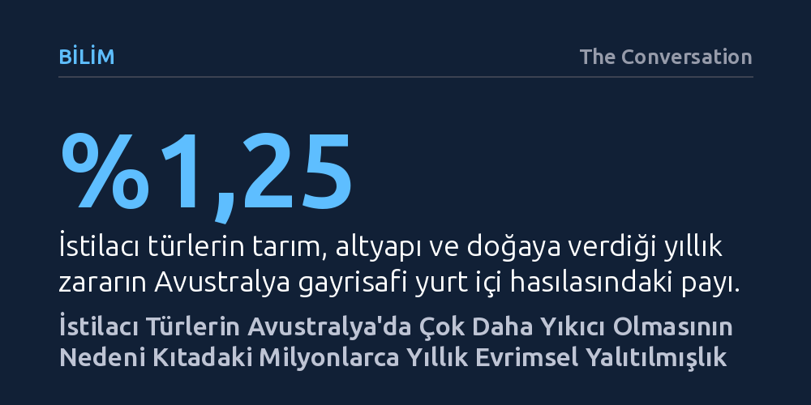

BILIM · The Conversation · 2026-10-12
Avustralya ve Yeni Zelanda'nın istilacı türlerden orantısız zarar görmesi, milyonlarca yıllık coğrafi yalıtılmışlığın yerel canlıları Avrasya kökenli yırtıcılara karşı savunmasız bırakmasından kaynaklanıyor. Geniş kıtalarda çetin rekabetle evrimleşen kedi ve tavşan gibi süper istilacılar, ekolojik boşlukları kullanarak yerel türleri hızla tüketiyor.
Coğrafi yalıtılmışlığın yerel türleri korumak yerine, onları büyük kıtalarda çetin rekabetle bilenmiş yabancı türlere karşı büsbütün savunmasız bıraktığını gösterir.

Dünyada istilacı türlerin en ağır ekolojik ve ekonomik tahribata yol açtığı coğrafyalar düşünüldüğünde akla ilk olarak Avustralya gelmeyebilir. Etrafı okyanuslarla çevrili devasa bir ada kıta olması, insan nüfusunun seyrekliği, görece kısa sömürge geçmişi ve dünyanın en katı sınır biyogüvenlik denetimlerine sahip bulunması, Avustralya'yı bu tür tehditlere karşı korunaklı kılıyor gibi görünür.
Oysa sahadaki gerçek tam tersine işaret ediyor. Avustralya; Amerika Birleşik Devletleri ve Yeni Zelanda'nın ardından yabani türlerden dünyada en çok etkilenen üçüncü ülke konumunda. Kıtaya bugüne kadar dışarıdan getirilen 4.000'i aşkın türün 3.000'i kontrolden çıkarak istilacı statüsüne ulaştı. Bu türlerin tarıma, altyapıya ve yerel ekosisteme verdiği yıllık zarar, ülke gayrisafi yurt içi hasılasının yaklaşık yüzde 1,25'ini buluyor; bu da devletin yaşlı bakım hizmetlerine ayırdığı bütçeyle neredeyse aynı büyüklükte bir kayıp anlamına geliyor.
Bu çarpıcı çelişkinin yanıtı, temelleri Alfred Russel Wallace tarafından atılan ada biyocoğrafyasında yatıyor. Dış dünyadan yalıtılmış ada ekosistemleri, başka hiçbir yerde bulunmayan özgün türlerin evrimleşmesi için eşsiz bir zemin sunar. Ancak türleri milyonlarca yıl boyunca dış tehditlerden koruyan bu yalıtılmışlık, onları dışarıdan gelebilecek yeni rakiplere ve avcılara karşı büsbütün savunmasız bırakır.
Avustralya'nın biyoçeşitliliği büyük ölçüde bu ada tarihinin bir sonucudur. Kıta süper kıta Gondwana'dan koptuğunda Güney Kutbu'na yakın soğuk bir konumdaydı ve bu durum kıtadaki hayvan çeşitliliğini baştan sınırlamıştı. Ayrılmanın ardından kıtaya ulaşabilen az sayıdaki soy çizgisi, seyrek nüfuslu bu geniş coğrafyada hızla çeşitlendi. Bu nedenle Avustralya tür sayısı bakımından dünyadaki 17 mega-çeşitli ülkeden biri olsa da soy çizgisi çeşitliliği bakımından oldukça kısıtlıdır. Kıtada yaklaşık sekiz milyon yıl önce Asya'dan kemirgenler gelene kadar karasal plasentalı memeliler neredeyse hiç yoktu; ekosisteme keseliler hükmediyordu.
Avustralya'nın asimetrik biyoçeşitliliği, kıtayı dış istilalara karşı üç temel nedenden ötürü açık hale getiriyor: İstilacı türler yerel canlıların kullanmadığı ekolojik nişleri hızla dolduruyor, yerli türlerin tanımadığı ve savunma geliştiremediği avcılara dönüşüyor ve en önemlisi 'süper istilacı' vasfı taşıyan canlılar küçük adalarda değil, devasa kara parçalarında evrimleşiyor.
Süper istilacı; çok hızlı üreyen, geniş bir besin yelpazesine sahip, farklı çevre koşullarına hızla uyum sağlayan ve hızla yayılan türleri tanımlar. Avrasya gibi birbirine bağlı devasa kara kütlelerinde evrimleşen canlılar, çok daha çeşitli rakipler ve avcılarla yüzleşerek adaptasyonlarını bilemiştir. Avustralya'ya en büyük maliyeti getiren sokak/yaban kedileri ve Avrupa yaban tavşanları tam olarak bu evrimsel geçmişin ürünüdür. Orta Doğu kökenli kediler ve Avrupa kökenli tavşanlar, Avrasya'nın çetin rekabet ortamında biçimlenmiştir.
Buna karşılık Avustralya'nın yerel canlıları, örneğin bilby gibi keseli memeliler, et placentası taşıyan avcılarla hiç karşılaşmadan evrimleşti. İnsan yerleşiminden önce bilbylerin başlıca avcısı olan keseli sansarlar (quoll), yaban kedilerinden çok daha küçük ve yavaştı. Benzer biçimde, kıtada tavşanlar gibi inanılmaz bir hızla çoğalıp önüne gelen her yeşilliği tüketen hiçbir orta boy keseli bulunmuyordu; bettonglar kök ve mantarlarla beslenirken bilbyler hepçildi ve her ikisi de çok daha yavaş ürüyordu. Bu ekolojik boşluk, istilacıların kıtada benzersiz bir hızla yayılmasına yol açtı.
Yalıtılmışlığın yarattığı bu kırılganlık sadece kıtalararası geçişlerde değil, bölgesel düzeyde de kendini gösteriyor. Avustralya'dan çok daha yalıtılmış bir ada ekosistemine sahip olan Yeni Zelanda'da karasal plasentalı hiçbir memeli bulunmuyordu. Bu durum, Avustralya'dan getirilen vals ve keseli sıçan (possum) gibi hayvanların Yeni Zelanda'da kontrolsüzce yayılarak birer çevre felaketine dönüşmesine neden oldu.
Oysa aynı keseli türler, plasentalı memelilerle dolu diğer kıtalarda tutunmaya kalktıklarında çok daha çetin bir rekabetle karşılaşıp başarısız olmaktadır. Bir adada yaşamak yeni rakipler gelene kadar huzurlu bir tecrit sunsa da yabancı türler kapıyı çaldığında bu durum yıkıcı bir dezavantaja dönüşüyor. Avustralya ve Yeni Zelanda'nın olağanüstü sıkı biyogüvenlik önlemlerine rağmen istilacı türlerden en çok zarar gören yerler olmasının ardındaki temel dinamik, sınır denetimlerinin yetersizliği değil, milyonlarca yıllık evrimsel hazırlıksızlıktır.